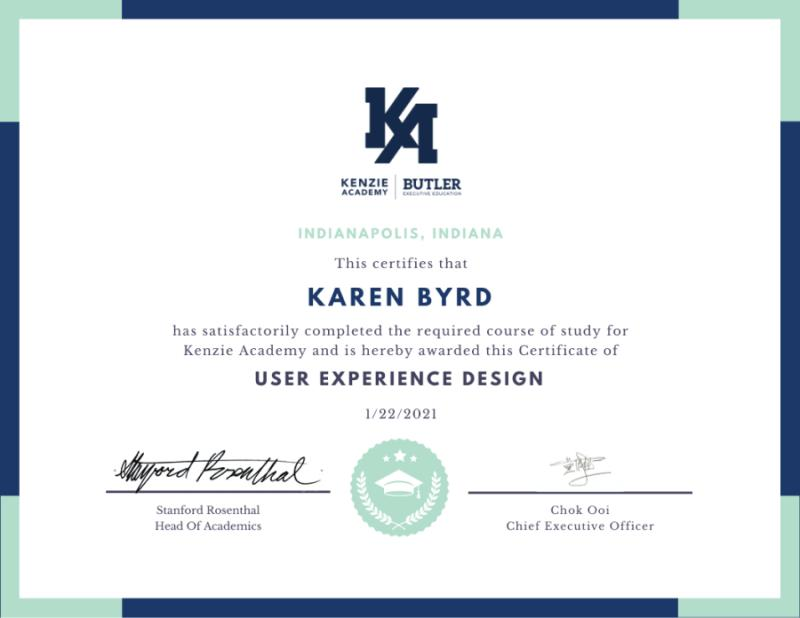
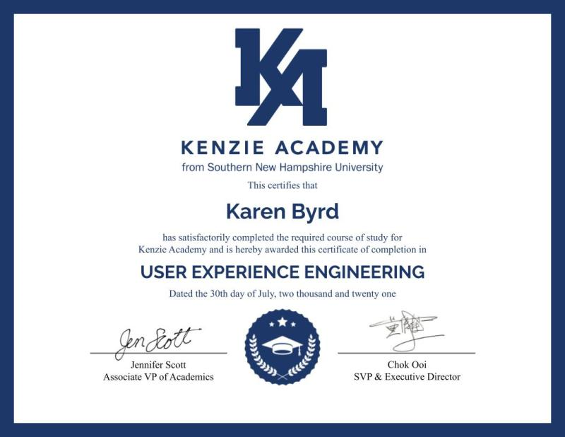

My passion is designing and developing user friendly websites. I have experience in user research, wireframes, prototyping, development, and testing. My desire is to create amazing websites and applications.
Education
Master of Science: Information Technology Web Design - Southern New Hampshire University (2023-2024)
Bachelor of Science: Game Programming and Development - Southern New Hampshire University (2021-2023)
User Experience Design and Engineering - Kenzie Academy(2020-2021)
Work Experience
Academic Experience
User Experience Developer - LORE 2021
Project Manager, UI Development, and Design
Led team of 5 to develop a mobile app for Dungen and Dragon enthusiast to better maintain playablity.
Developed landing page with React.
Improved and expanded project platforms using JavaScript in a development rich User Interface.
Analyzed existing interfaces to detect user pain points, recommended design changes.
Collaborated with teammates to deliver valuable features meeting business and customer needs.
Developed Application UIs via React, JavaScript, and CSS.
User Experience Designer - Infin8 2020
Project Manager, Designer, Researcher, and Interviewer
Created mobile app that helps non-profit organizations utilize communities around them.
Utilized research and interview techniques to understand what the users needed and wanted.
Monitored emerging UX design trends and practices for useful techniques and cutting-edge developments suitable for integration into the futre of the project.
Performed User testings to understand how they interacted with the UI design.
UX Designer - Haystack! 2021
Project Manager and Designer
Spearheaded team of 6 developing scavenger hunt mobile game in 4 weeks.
Created sign-in page, universal loading screens, and tutorial.
Designed elevated with brand-right, creative design to achieve marketing anad merchant objectives.
Utilized AR so the camera could be dimmed while saving battery life.
Demonstrated respect, friendliness, and willingness to hlep wherever needed to make sure team was on track and communicated.
Employed Trello for our daily tasks to improve efficiency and productivity.
Work Experience
Chili's Bar and Grill 2002 - 2012, 2015 - 2018
General Manager
Partnered quarterly with GMs in my region to make sure demand we met.
Established and administered annual budget with controls to prevent overages, minimize burn rate and support sustainability objectives.
Organized budgets, oversaw P&Ls and achieved margin targets consistently for growth plans.
Designed modern employee recongnition program to boost productivity and moral.
Maximized efficiency by coaching and mentoring personel on management principles, industry practices, company procedures, and technology systems.
Longhorn Steeakhouse 2012 - 2015
General Manager
Created division charts for organization and cleanliness.
Increased kitchen moral by using competitions each quarter within the our area.
Motivated team of 60 employees ot maintain high standards of food preparation and efficiency during shifts.
Skills
Technical
Frontend Development (HTML, CSS, JavaScript)
C#
Python
C++
Adobe Creative Cloud Suties (Photoshop, Illustrator, After Effects, InDesign, Premiere Rush, and Audition)
Soft
Productivity
Time Management
Team building
Leadership
Organizational
Analytical Skills
Problem Solving
Certifications and Awards

Competed a 6 month course for User Experience (UX) Design. Learned research, design, prototyping, QA testing, and launch.

Competed a 6 month course for User Experience (UX) Engineering. Learned HTML, CSS, JavaScript, and React.